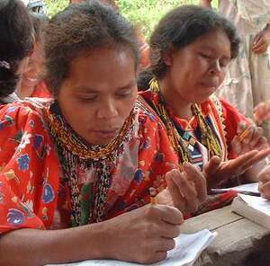

seel 
/sɔʔɔl/
v_rt.
“count”
v.
for someone (egseel, agent, eg><ø-) to count something (egseelen, theme, eg><en-)
Egseel sikandin te seleppì din ne bayad te babuy rin.
He's counting his money that's the payment for his pig.
Warè ku seela sikandan.
I haven't counted them.
Seel rè ka natuenan ku diyè te iskuwilyahan.
Counting was my only skill at school.
Eng. count, to; total, to; number, to
Tag. bumílang
Ceb. mag-ihap; iphon
Ilo.: agbílang
OCM: Numeration (802)
Online dict status: -
Usage level: M
Updated by: RJH,AAA,AAA,RJH
Last updated: 20/Dec/2011
This page last updated: 28-Dec-2019
Copyright © 2009-2014, Matigsalug Language Christian Association, Inc